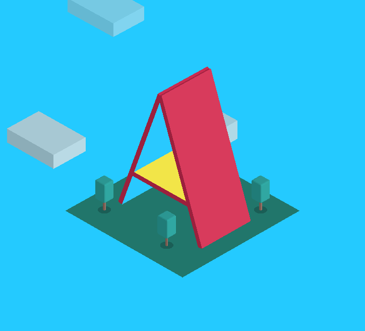

Tutoriais A-Frame
Desenvolvendo experiências em realidade virtual de forma prática
A-Frame é um framework web para construir experiências de realidade virtual (VR). O A-Frame é baseado no topo do HTML, simplificando o início. Mas A-Frame não é apenas um gráfico de cena 3D ou uma linguagem de marcação; o núcleo é um poderoso framework de componentes de entidades que fornece uma estrutura declarativa, extensível e composta para o three.js. Saiba mais aqui